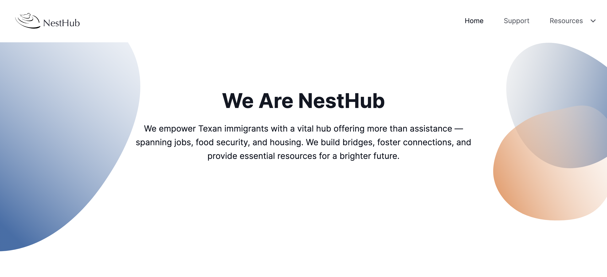
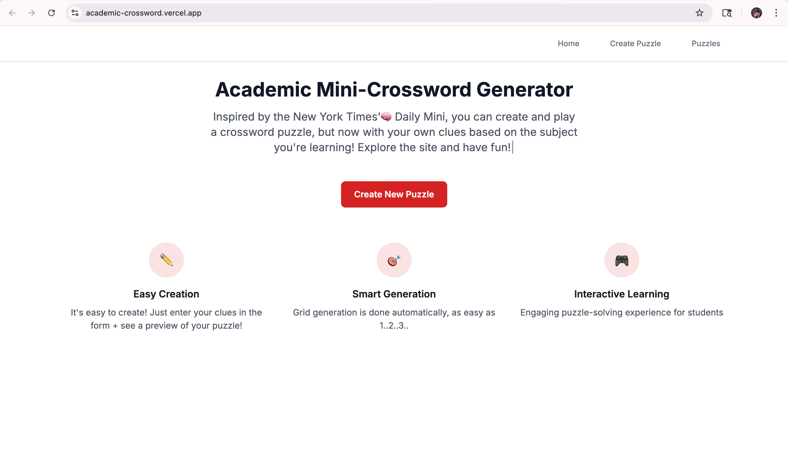
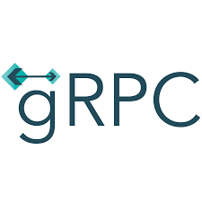
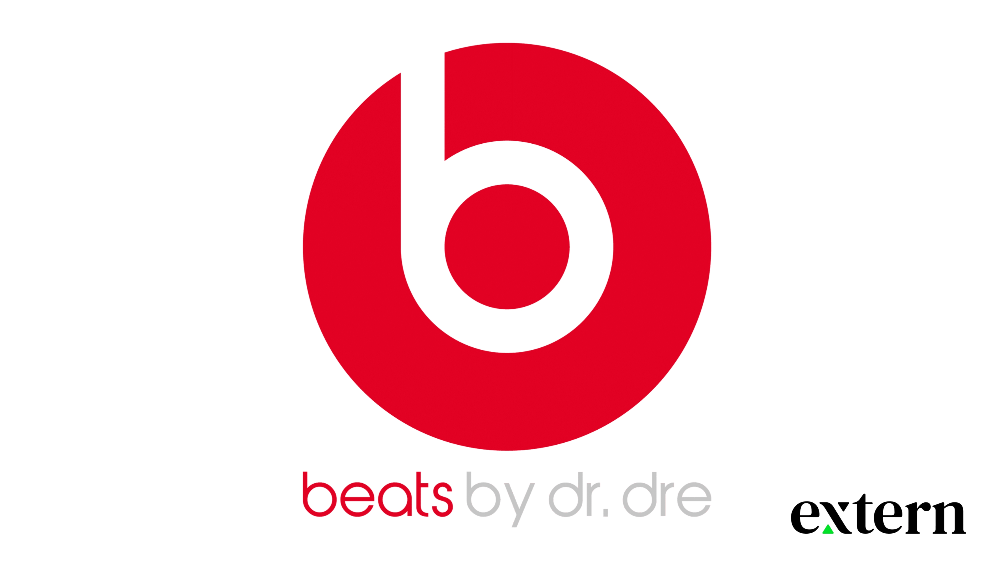

Hello World!

Hi! I'm Joanna Chimalilo — a Computer Science and Mathematics student at Texas Tech University, graduating in Spring 2027. Originally from Dar es Salaam, Tanzania 🇹🇿, my journey in technology is deeply driven by purpose: building technical systems that solve real problems and creating pathways for communities that need them most.
That dedication to giving back birthed Kimbilio la Binti, a non-profit initiative rooted in uplifting, mentoring, and creating educational and personal development opportunities for young girls back home. Whether I'm building community initiatives or writing code, my ultimate goal is using my skills to create lasting, tangible impact.
Technically, my focus spans software engineering, full-stack web applications, and data-driven computational research. Currently, I work as a Research Engineer at STARLabs, participate in the Break Through Tech ('26–'27) fellowship, previously worked as a Software Engineer Intern at Classed, and conducted computational astrophysics research with the University of Maryland GRAD-MAP program.
On campus, I serve as a Master Peer Tutor at the TECHniques Center, mentoring students with learning differences across algorithms and systems programming, and stay active in student outreach through the Society of Women Engineers (SWE) and the LYFE mentorship program.
I am actively seeking New Grad Software Engineering, Full-Stack Development, and Data Engineering roles starting Summer 2027.

STARLabs
2026 – Present
Classed
Previous Internship
Break Through Tech
2026 – 2027
University of Maryland — Dept. of Astronomy & Physics
June 2025 – August 2025
National Science Foundation
2024
TECHniques Center — Texas Tech University
August 2024 – Present

NestHub is a resource aggregation platform built for immigrants and newcomers in Texas, consolidating housing, legal aid, food assistance, and community listings. Developed automated Python and BeautifulSoup web scrapers to structure public data into a queryable backend. Designed a clean, accessible React frontend with community-driven submission verification. Awarded Best Diversity, Equity, and Inclusion Hack at Black Wings Hacks.



A real-time, gamified multiplayer coding platform where users compete head-to-head on Data Structures and Algorithms problems, battle AI bots, and earn Solana crypto tokens upon successful test passes. Engineered room-based real-time match state, sandboxed code execution evaluation, and wallet integration.

Full-stack interactive puzzle engine designed for university peer tutors to gamify revision sessions. Built with Next.js, React, TailwindCSS, and Firebase. Features dynamic 5x5 grid generation, searchable subject libraries, and instant client-side answer evaluation to boost memory retention during exam reviews.


High-throughput, multi-strategy trading engine developed for the UChicago 2025 Trading Competition. Leveraged gRPC endpoints to consume real-time order book feeds and structured sentiment signals across 5 simultaneous assets. Implemented dynamic order sizing, momentum indicators, short-covering thresholds, and a live Flask/WebSocket monitoring dashboard.



Analyzed 50,000+ consumer feedback and usage telemetry records using SQL, Pandas, and Tableau to detect drop-off patterns and sentiment shifts. Augmented findings with a Gemini 1.5 LLM review synthesis pipeline to deliver structured product enhancement recommendations to product managers and engineers.


I'm currently seeking New Grad 2027 Software Engineering, Full-Stack, and Data Engineering roles. Always open to conversations, collaborative projects, and mentorship!